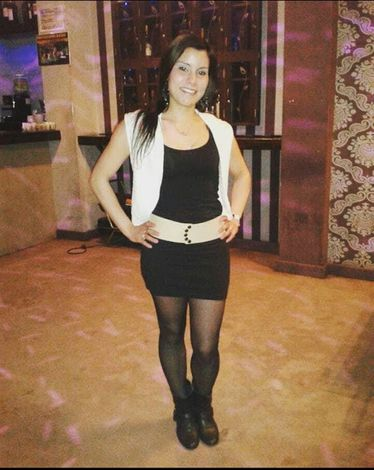

Sobre nosotros

Soy Romina Mutti, mamá de Sofía y Luisiana y compañera de vida de Fabricio.
Desde pequeña me instruí de forma autodidacta viendo recetas y videos de pastelería
en internet y practicando en cada minuto libre.
Así después de varios aciertos y fracasos empecé a perfeccionarme, a tomar pedidos para familiares
y amigos y asi "del boca en boca" fuí generando mis queridos "seguidores"
Me dedico a hacer todo tipo de pasteles y mientras tanto sigo perfeccionarme tomando clases
en el IAC para así poder desarrollar la excelencia en este arte que amo que es la pastelería